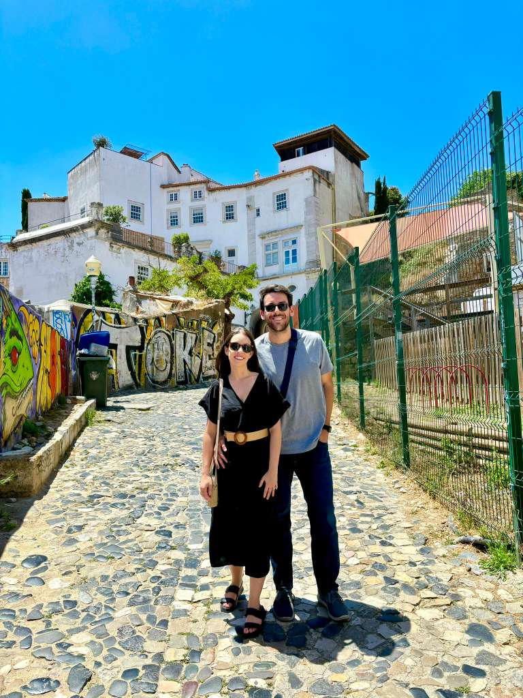
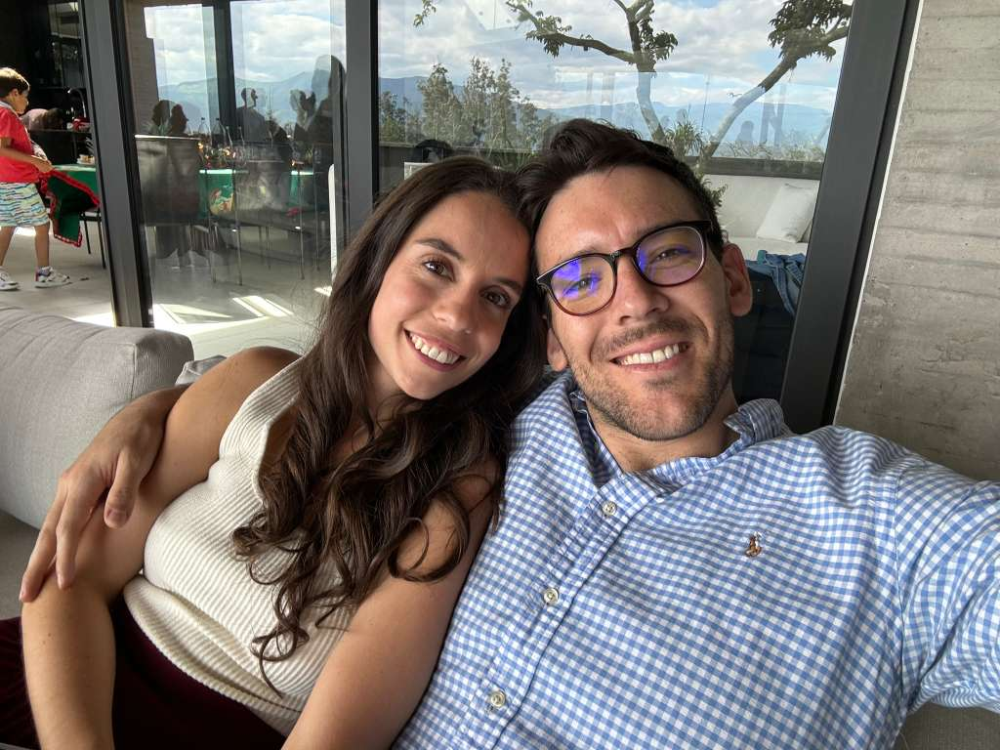
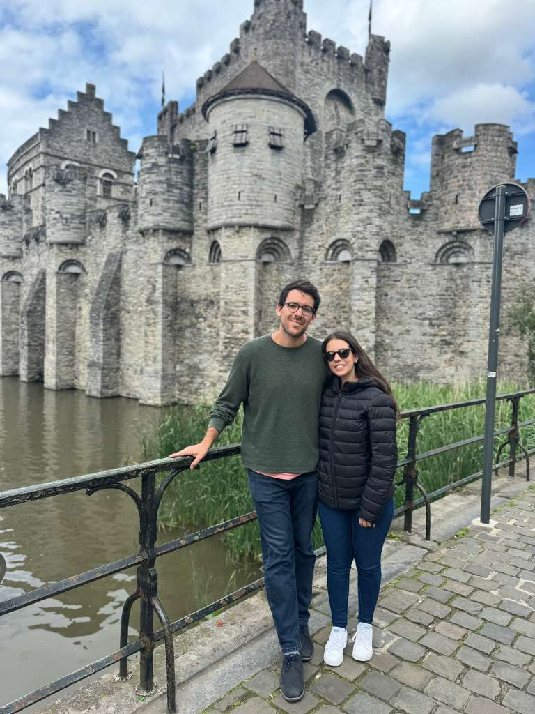
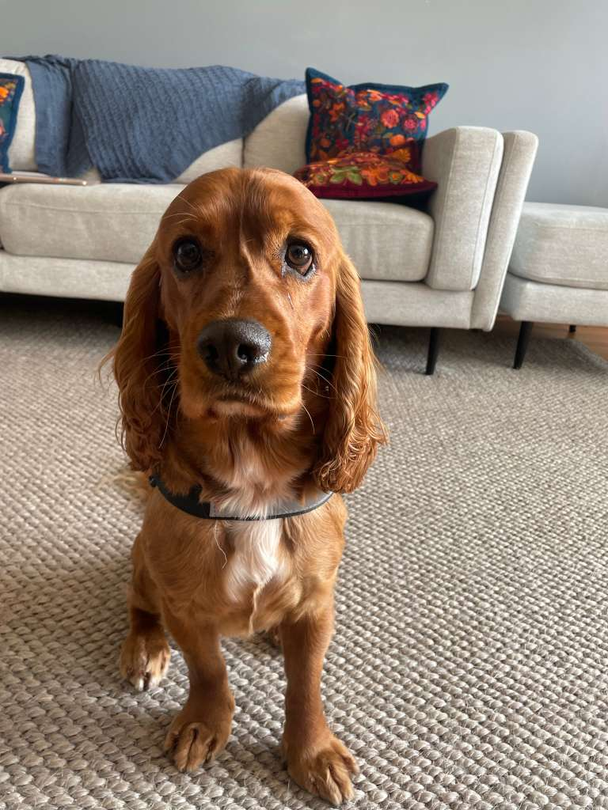

-->Quiénes somos
Somos Pedro y MarÃÂa del Pilar, una pareja de 32 y 30 años que se muda a Madrid desde Washington DC (Estados Unidos) a finales de junio de 2026. Pedro es ecuatoriano y MarÃÂa del Pilar es de Barcelona â asàque para ella es, en cierto modo, volver a casa.
Llevamos 6 años en Estados Unidos y ahora, por motivos profesionales y familiares, nos mudamos a Madrid. Estamos buscando un piso desde junio (con fecha flexible) donde quedarnos a largo plazo. Somos ordenados, respetuosos y siempre puntuales con los pagos.
Pedro acaba de terminar su doctorado en EconomÃÂa en la Universidad George Washington y empieza como profesor en CUNEF Universidad con contrato permanente. MarÃÂa del Pilar lleva 6 años trabajando remoto en el equipo de marketing de Rappi â una empresa de servicios de delivery. Puede trabajar desde Madrid sin ningún problema, con total flexibilidad de horario.
Nos mudamos con Teo, nuestro cocker spaniel de 6 años â pequeño, tranquilo, y bien educado.
Nos encanto tu propiedad!strong> y queremos hacerla nuestro nuevo hogar. Además de haber sido inquilinos en el pasado, tambien somos propietarios de dos apartamentos: uno en Washington y otro en Quito. Sabemos lo que significa confiar un piso a alguien â y lo tomamos muy en serio.


El tercer miembro de la familia

Teo es pequeño, tranquilo, y lleva años viviendo en pisos en Washington, Miami, y Ecuador. Nunca hemos tenido una queja de vecinos ni de propietarios â ni una. Pasa la mayor parte del dÃÂa durmiendo y disfrutando de paseos cortos.
Pesa unos 15 kg y esta al dÃÂa con todas sus vacunas. Siempre viajamos con el en cabina en el avion.
Contacto y redes sociales
Cualquier pregunta, duda, o simplemente si tienen ganas de conocernos un poco mejor antes de decidir â estamos disponibles. Les dejamos nuestros links a nuestros perfiles en Linkedin, Facebook, y Instagram.
También pueden contactarnos directamente al +1(628)252-8644.